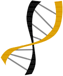

Guilherme Camargo| Welcome!
EDUCATION
- Master of Science in Bioinformatics, Federal University of Technology – Parana (PPGBIOINFO - UTFPR). Cornélio Procópio - PR, Brazil. Concluded in 2018. 
- Bachelor of Science in Computer Engineering, Federal University of Technology – Parana (DACOM - UTFPR). Cornélio Procópio - PR, Brazil. Concluded in 2015.
WORK
- Data Scientist/Software Engineer
- Technical Training
- Undergraduate research project
2020 to present : SOLPE
2019 to 2020: SOLPE
2013 to 2015: Fundação Araucária
PROJECTS
- CRM
- RockS
- FASSL
- SurFun
Effective and efficient active semi-supervised learning framework, including a new active learning strategy for biological context.
SurFun is a software that allows you to construct, in an easy, fast and systematic way, atomistic geometries of functionalized nanoparticles with any functional groups informed by the user.